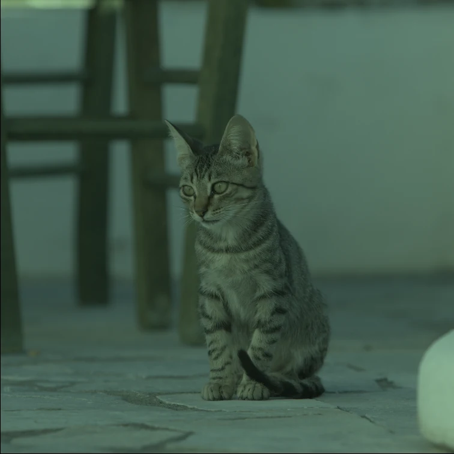
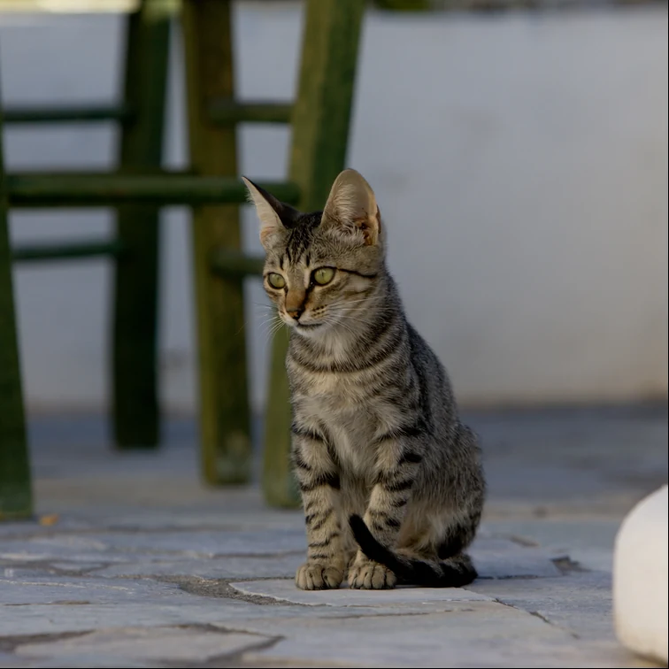
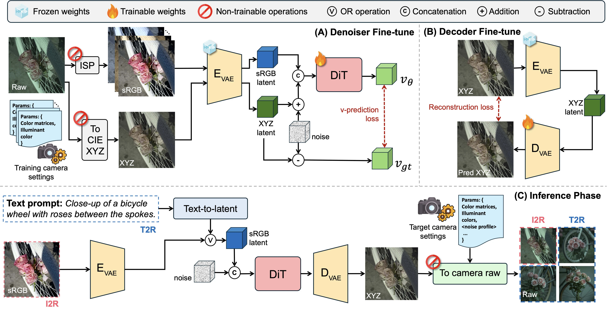
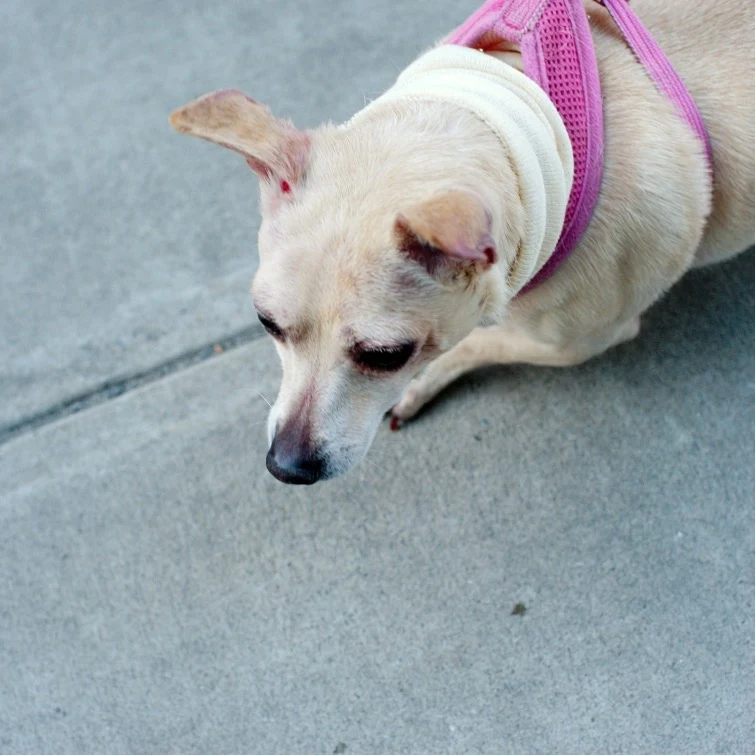
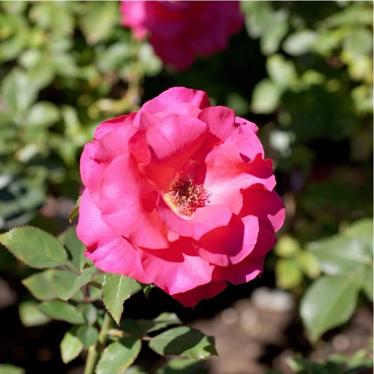
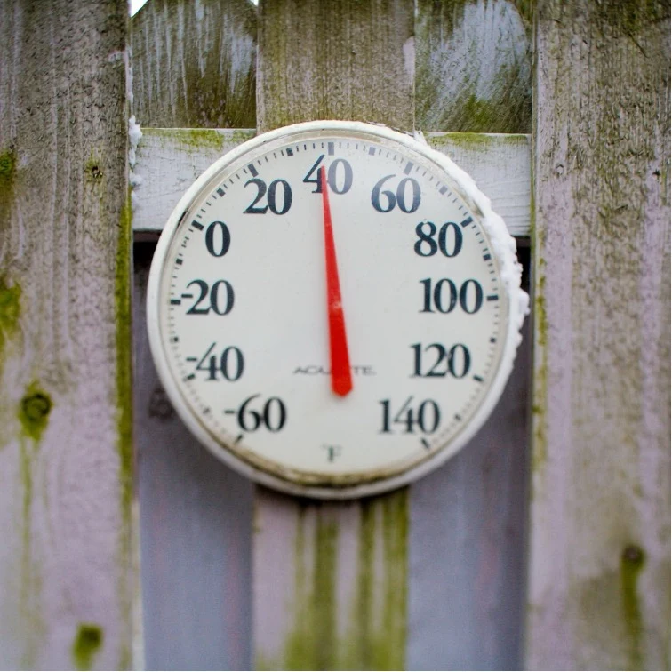
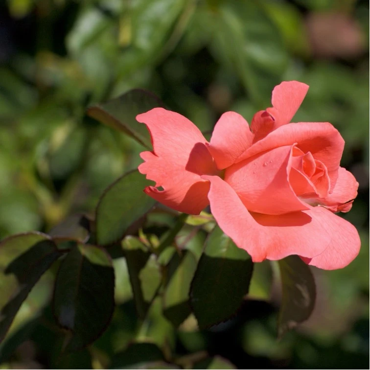
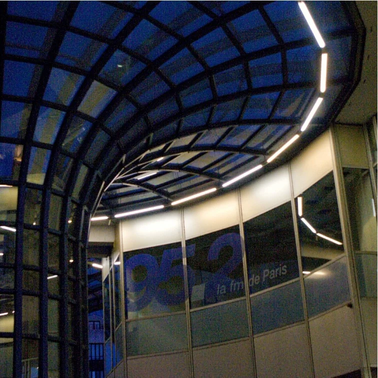
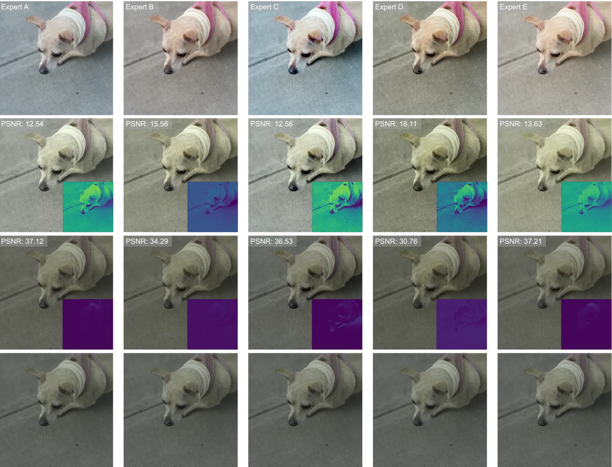

Learning Camera Raw Image Generation
A unified framework for text-to-raw and sRGB-to-raw generation across arbitrary camera sensors.
1AI Center – Toronto, Samsung Electronics 2Yonsei University * Equal Contribution
RawGen introduces a generative approach that learns the complex distribution of raw sensor data directly, enabling high-fidelity generation from either text descriptions or standard sRGB images across arbitrary camera sensors.
Many-to-One Reconstruction: Maps multiple photo-finished sRGB to a single canonical linear reference, robust to unknown ISPs.
Camera-Agnostic Generation: First unified framework for text-driven linear and camera-specific raw synthesis without retraining.
Scalable Data Synthesis: Text-to-raw alleviates data acquisition challenges in illuminant estimation, neural ISP, and denoising.


RawGen generates camera raw images from sRGB inputs or text prompts. Click to zoom.
Each camera sensor has a unique spectral sensitivity; even under the same lighting and scene, different sensors produce different colors. RawGen learns this device-specific mapping, generating raw images for any target camera from a single trained model. Select a scene and camera to see the results.
A three-stage generative pipeline built on FLUX.1-Kontext.

RawGen converts arbitrary sRGB images or text prompts into sensor-realistic camera raw via three stages: (1) a many-to-one data construction that pairs diverse sRGB renditions with a single CIE XYZ anchor, (2) DiT denoiser and VAE decoder fine-tuning on the constructed pairs, and (3) unified Image-to-Raw / Text-to-Raw inference.
From a raw image, we derive a CIE XYZ anchor. Then we generate N sRGB variants by randomizing white balance, tone-curve, and contrast.
We tune the DiT to predict the rectified-flow velocity target using LoRA:
sRGB context and noisy target latents are concatenated along the sequence dimension.
The VAE decoder is retargeted from sRGB to linear XYZ:
sRGB → VAE enc → DiT → XYZ latent → VAE dec → camera raw
Text → FLUX.1 latent → DiT → XYZ latent → VAE dec → camera raw
We evaluate on the MIT-Adobe FiveK dataset, where each scene is retouched by five professional photographers (Expert A–E) with distinct aesthetic preferences. Conventional methods fail when the input sRGB comes from an unknown rendering style, but RawGen's many-to-one training maps all five diverse renditions to a single canonical CIE XYZ, reliably recovering the same linear image regardless of photo-finishing.

Scene 1
Scene 2
Scene 3
Scene 4
Scene 5
| Method | Expert A | Expert B | Expert C | Expert D | Expert E | |||||
|---|---|---|---|---|---|---|---|---|---|---|
| PSNR | SSIM | PSNR | SSIM | PSNR | SSIM | PSNR | SSIM | PSNR | SSIM | |
| CIE XYZ Net | 19.60 | .786 | 21.04 | .843 | 19.49 | .780 | 19.44 | .806 | 18.64 | .792 |
| InvISP | 16.04 | .685 | 16.04 | .685 | 14.92 | .632 | 14.24 | .680 | 13.30 | .647 |
| Raw-Diffusion | 19.30 | .783 | 20.66 | .840 | 18.79 | .771 | 18.69 | .797 | 17.49 | .775 |
| RawGen (Ours) | 23.20 | .843 | 24.35 | .858 | 23.37 | .839 | 23.51 | .853 | 23.89 | .850 |
Table 1: sRGB-to-XYZ on MIT-Adobe FiveK across five expert styles.
Collecting device-specific raw data at scale is costly and labor-intensive. RawGen's Text-to-Raw pipeline generates diverse, camera-specific raw images from text prompts alone, without physical capture. With just 3K synthetic samples, downstream tasks like illuminant estimation, neural ISP learning, and raw denoising approach or exceed real-data performance.
| Method | Illuminant Est. | Neural ISP | Denoise 1600 | Denoise 3200 | |||||
|---|---|---|---|---|---|---|---|---|---|
| Mean | Med | W25% | PSNR | SSIM | PSNR | SSIM | PSNR | SSIM | |
| EnlightenGAN | 7.01 | 6.82 | 11.07 | 35.58 | .965 | 48.82 | .991 | 47.25 | .988 |
| UPI | 6.26 | 5.89 | 10.33 | 36.43 | .966 | 49.05 | .990 | 47.51 | .988 |
| Graphics2RAW | 4.21 | 3.38 | 8.57 | 38.10 | .974 | 49.37 | .991 | 48.16 | .989 |
| RawGen | 3.14 | 2.11 | 7.37 | 38.42 | .970 | 50.63 | .994 | 48.57 | .992 |
| Real | 3.02 | 2.17 | 6.77 | 38.32 | .974 | 49.80 | .993 | 48.25 | .990 |
RawGen decouples content synthesis from rendering by producing a scene-referred linear image. Every downstream edit becomes a standard ISP operation, with no re-inference or retraining.
Tuned to specific cameras and fixed imaging assumptions. Heterogeneous sRGB inputs outside the training distribution often cause failures.
⚠ device-dependentRe-runs full diffusion for every parameter change. Only supports parameters explicitly learned during training. New edit types require retraining.
✕ fixed parameter setGenerate a linear raw image once, then apply any ISP operation (white balance, exposure, tone mapping) with any software pipeline.
✓ all edit types supportedIf you find RawGen useful, please cite our work.
@article{kim2026rawgen,
title = {RawGen: Learning Camera Raw Image Generation},
author = {Dongyoung Kim and Junyong Lee and Abhijith Punnappurath and Mahmoud Afifi and Sangmin Han and Alex Levinshtein and Michael S. Brown},
journal = {arXiv preprint},
year = {2026}
}